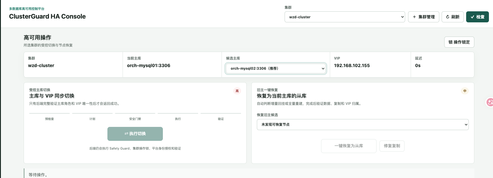
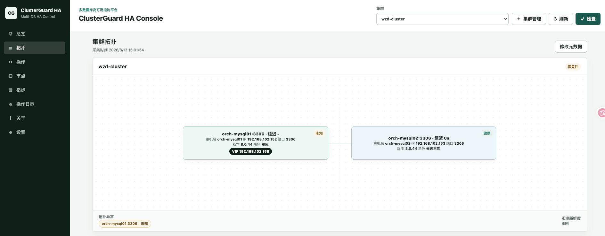
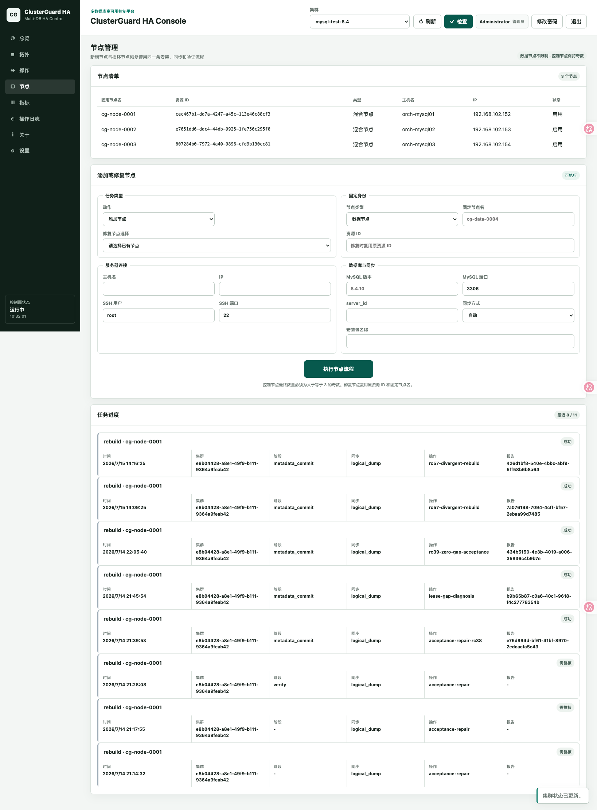
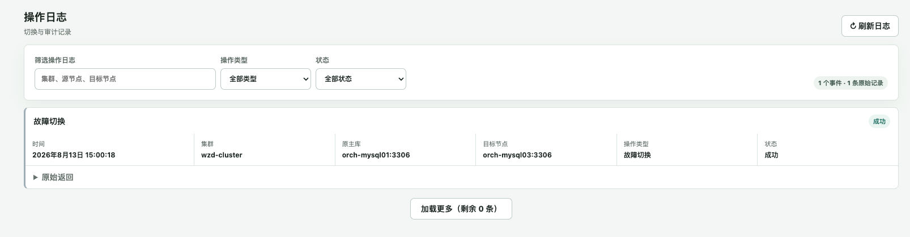

ClusterGuard HA 产品导览#
本文通过实际测试环境截图介绍 ClusterGuard HA 控制台的核心页面。截图中的集群名称、节点地址和运行状态来自实验室环境，仅用于说明界面结构；生产环境应以现场拓扑、版本和安全策略为准。
高可用操作工作台#
操作页围绕当前选中的集群组织信息，顶部固定显示当前主库、候选主库、VIP 和复制延迟。受控切换、旧主恢复、安全门禁和验证属于同一条后端工作流，页面不会仅凭按钮点击宣告成功。

主要能力：
- 从当前集群清单中选择候选主库，禁止跨集群操作节点；
- 将数据库角色切换与 VIP 所有权作为同一个受控操作处理；
- 执行前检查身份、复制状态、Raft 多数派、操作锁和安全门禁；
- 执行后重新发现拓扑，并验证新主、从库、VIP 和复制链路；
- 旧主恢复后可按增量回挂或全量重建流程重新加入。
集群拓扑#
拓扑页以不可变资源身份组织节点，主机名、IP 和端口属于可修正端点，不作为资源主键。节点卡片展示角色、健康、版本、端点和 VIP，异常信息必须来自最新探测证据，无法探测时显示未知或不可达，不沿用旧状态伪装正常。

拓扑页用于回答四个问题：
- 当前可观测主库是谁；
- 哪些节点正在复制，以及复制方向是否正确；
- VIP 当前归属于哪个节点；
- 哪些节点不可达、降级或需要人工关注。
节点生命周期#
节点页将节点清单和生命周期任务分开。新增节点与修复已有节点通过同一个弹窗收集参数，提交后进入可审计任务，不在主页面长期堆放安装表单。

节点任务可覆盖：
- 数据节点、控制节点和混合节点；
- 固定节点名称与不可变资源 ID；
- SSH 连接、数据库介质、端口和数据目录；
- 数据同步方式选择、复制恢复和完成验证；
- 控制节点奇数约束以及 Raft 成员变更检查。
操作日志#
操作日志将高层事件与原始返回分开。默认列表展示时间、集群、原主库、目标节点、操作类型和最终状态；需要排障时再展开完整原始记录，其中携带操作 UUID、工作流阶段、检查项和报告链接。

日志中的“成功”必须同时满足执行与后置验证。数据库角色已发生变化但验证未完成时，应显示“需复核”或“失败”，不能只依据命令退出码写成成功。
截图维护规则#
- 只使用真实产品页面，不使用设计稿冒充已交付能力；
- 不展示密码、令牌、私钥、Cookie 或数据库连接密钥；
- 截图应注明来自测试环境，不作为生产验收证据；
- 页面结构发生明显变化时同步更新中英文文档和截图；
- 同一张截图由中英文文档共用，避免两个语言版本出现不同产品状态。